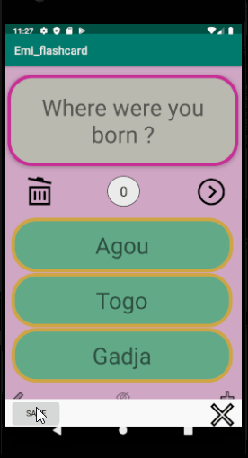
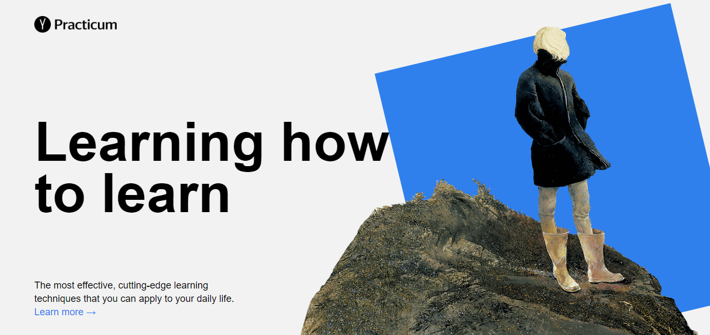

Work Experience
-
Student Peer Advisor
June 2019 - Current
Give academic recommendations to students
Assist School DSO with Admission Applications
Remote work: flyers conception and video projectsOffice of International Education of Peralta Communty College District - Oakland, CA, U.S.
-
Greater and Math Tutor
March 2019 - Current
Staff Member
Provide one on one Tutoring in person and remotelyLaney College Math-Lab - Oakland, CA, U.S.
-
Embedded Math Precalculus Tutor
June - December 2019
Assist teacher during lecture to help students understand the course.
Conduct lectures covering specific sections explaining to students with a student’s perspective.
Provide one on one Tutoring in class and at the Learning Resources CenterBerkeley City College, Learning Resources Center - Berkeley, CA, U.S.
-
IT Technician (Interim Position)
October - December 2018
Provided technical support for IT equipment across the company: PCs, Laptops, Printers.
Responded in a timely manner to service issues and requests.
Replaced equipment as necessary.MAERSK Line - Lomé, TOGO
-
Bookkeeping and Accounting
September 2015 – December 2018
Managed and recorded all accounting transactions
Maintained invoices and bills
Prepared Data required for auditMutuelle Rurale du Togo (MRT) - Lomé, TOGO
-
IT Support Assistant in a Call Center
February 2013 - December 2018
Only Woman managing the company’s IT Department.
Provided technical support across the company.
Installing and configuring computer hardware, software, systems, networks, printers.
Responded in a timely manner to service issues and requests.
Replaced equipment as necessary.
Supervision and troubleshooting of network systems and applications.
Conducted projects related to the computer network.GROUPE ASEICI - Lomé, TOGO
-
Internship in TV Broadcasting and Production Technician
September - November 2012
Set up, operate and maintain the electronic equipment to transmit television programs.
Control audio equipment to regulate volume level and quality of sound during television broadcast.
Operate transmitter to broadcast television programs.La Chaine du Futur (LCF) - Lomé, TOGO
-
Store Manager
Organized, coordinated, supervised and managed all operations of receiving, handling and transporting the products.
Managed, coordinated and monitored the team.
Controlled and coordinated the accounting of the movements of products and the permanent state of stocks.GMS - Lomé, TOGO
Leadership
-
Students Representative
October 2012 - July 2015
Students Representative to the Groupe BK-IAET school board.
University Groupe BK-IAET - Lomé, TOGO
-
Lead of Women Tech Makers
2016 - Present
Lead of Women TechMakers (WTM), Lomé Chapter
Co-Lead of Google Development Group (GDG), Lomé Chapter
GDG && WTM - Lomé, TOGO
-
Activities Coordinator in an Orphanage
Coordinate activities at Centre d’Hébergement et d’Education des Enfants Démunis (CH2ED), a non-profit organization that provides shelter and education for orphans and poor children in my community.
CH2ED - Kpalimé, TOGO
-
Founder of MRT
Mutuelle Rurale du Togo (MRT) is a microfinance cooperative to help people in the rural community manage their finances.
MRT - Lomé, TOGO
Projects
I participated to some bootcamps which allow me to try myself at different fields in Computer Science, such as Android Development and Web Development. Below are my projects.
-

Andorid - FlashCard
This Android Flash Card App alows user to click on the question view to reveal the answer. User can also make visible by a click three proposition answers to choose from. An animation follows the user action, wheither it was the correct answer or not. This app also allows users to create and save their own cards, and breose through the database to see all cards.
-
First WebSite with CSS3 and HTML5
My first WebSite with CSS3 and HTML5 only. It is a standard single-page website which covers flexbox layout, positioning, fonts and iframes. The file structure follows the BEM Methodology, and animations and transitions are coded with CSS3.
-
Website with Grid Display

This second projects focus was on grid layout and how to design an adaptive or responsive website. I used the Mobile first approach to design this adaptive website, the design was provided on Figma. This projects was design to be adapted to screen with following widths: 320, 768, 1024 and 1280 pixels. I used media queries to handle breakpoints to unsure that the website runs smoothly.
-
Website with Form Validation

Thi is my first project using JavaScript to add elements to the page on load and allow user to edit existing content and add new items if needed. On page load, six intial card are preloaded with JavaScript All forms are hidden per default, and they are only visible through user interactions. The inputs fields are also required on content edit or add. User can validate input with Enter key, and close a popup form with Escape key down or a click on the overlay.
-
This Website
This Portfolio not only helps me streghten the knowledge I have in HTML, CSS and JavaScript; but it also showcase my projects and talk about my journey in Computer Science. It is the best way for me to practice and get better at what I am learning to be ready for the marketplace.